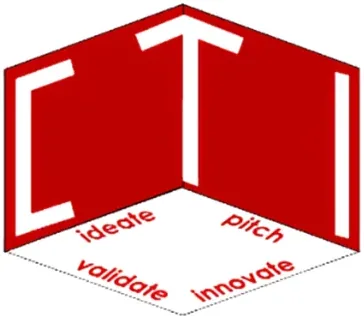

BatStateU Center for Technopreneurship & Innovation (CTI)
Batangas State University (The National Engineering University) · Region IV-A
The Center for Technopreneurship and Innovation (CTI) is the Technology Business Incubator (TBI) of Batangas State University – The National Engineering University, established in September 2014 in Batangas City. A DOST-PCIEERD-supported TBI located on the second floor of the STEER Hub Building at BatStateU Alangilan Campus, CTI is one of CALABARZON's flagship incubators — serving Region IV-A's startup ecosystem across Cavite, Laguna, Batangas, Rizal, and Quezon.
- Category
- Technology Business Incubator
- Host institution
- Batangas State University (The National Engineering University)
- City
- Batangas City, Batangas
- Region
- Region IV-A
- Operating status
- Operating
About the Center
CTI has received national recognition: it is a winner of the Best Incubator Infrastructure Award at the DOST/QBO Philippine Startup Incubator Awards, reflecting its role as a model TBI facility. As BatStateU's engineering-centric campus hosts one of the Philippines' largest engineering and technology programs, CTI draws from a rich pipeline of student researchers, engineering graduates, and faculty innovators — whose R&D outputs are incubated for commercial viability through the center.
The center integrates Technopreneurship 101 directly into BatStateU's Engineering, Technology, and Computing Science programs — ensuring students encounter entrepreneurship thinking early in their academic journey and that promising venture ideas from these classes enter the incubation pipeline. CTI works closely with health-tech, ICT, and other regional industry partners, demonstrating the center's relevance across CALABARZON's diverse sectors.
Programs & Services
- Startup Incubation Program — Full incubation support for early-stage technology-based startups in CALABARZON, with dedicated incubation space in the STEER Hub and access to BatStateU's engineering facilities and research resources
- Technopreneurship 101 Integration — Academic entrepreneurship program embedded in BatStateU Engineering, Technology, and Computing Science curricula, channeling the best student venture ideas into the CTI incubation pipeline
- R&D Output Commercialization — Structured support for faculty and student researchers converting university R&D outputs and innovations into commercially viable technology-based business ventures
- Mentorship & Business Development — Coaching on business model design, market validation, product development, financial planning, investor pitching, and go-to-market strategy for incubatee startups
- IP/Legal Guidance — Intellectual property advisory, patent filing support, and business registration assistance for technology innovations developed within BatStateU-CTI
- DOST Funding & Investor Linkages — Facilitation of access to DOST-PCIEERD grants, QBO Innovation Hub connections, and startup funding programs for qualifying CALABARZON startups
Contact
Sources & references
- batstateu.edu.ph/cti-batstateu
- batstateucti.wordpress.com
- batstateu.edu.ph/batstateus-cti-wins-best-incubator-infrastructure-award-fr…
Details are drawn from public records and the sources above, July 2026.
Startupreneur Innovation Hub · synced from the Notion catalog (July 2026) · status: published.